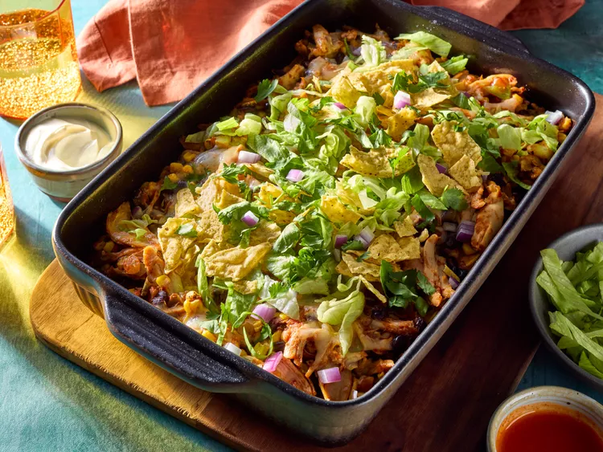

Chicken Taco Dump Dinner

Description
For this chicken taco dump dinner, chicken, beans, and salsa are mixed together, and layered with corn tortillas and cheese in an easy casserole.
Serve with any taco toppings you like, such as shredded lettuce, chopped red onion,
chopped fresh cilantro, taco sauce, sour cream, chopped avocado, and crushed tortilla chips.
Ingredients
- cooking spray
- 1 (16 ounce) jar thick and chunky mild salsa
- 1 (4 ounce) can diced green chiles
- 1 tablespoon chili powder
- 1 teaspoon ground cumin
- 1/4 teaspoon salt
- 5 cups shredded cooked chicken
- 1 (15 ounce) can black beans, rinsed and drained
- 1 1/2 cups frozen fire-roasted corn
- 12 (6 inch) corn tortillas
- 3 cups shredded Monterey Jack cheese, divided
- taco toppings, such as shredded lettuce, chopped red onion, chopped fresh cilantro,
taco sauce, sour cream, chopped avocado, or crushed tortilla chips
Steps
- Gather all ingredients.
- Preheat the oven to 375 degrees F (190 degrees C). Grease a 9x13-inch baking dish with cooking spray.
- Combine salsa, green chiles, chili powder, cumin, and salt in a large bowl. Stir in chicken, black beans, and corn.
- Place half of tortilla pieces in the bottom of the prepared dish. Top with half of chicken mixture and 1 cup cheese.
Repeat layers of tortilla pieces and chicken mixture.
- Cover the dish with aluminum foil. Bake in the preheated oven for 35 minutes.
- Remove the foil and sprinkle with remaining 2 cups cheese. Continue to bake until heated through and
cheese is melted and just starting to brown, about 10 minutes.
- Top servings with desired toppers.
Home